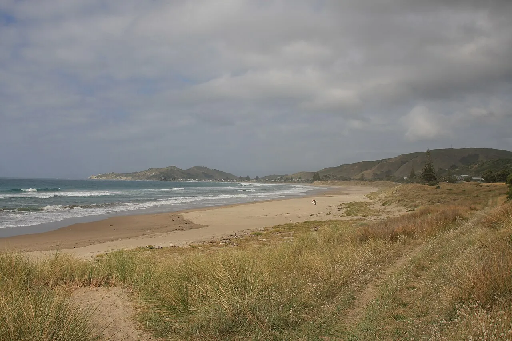

Wainui
Gisborne, Nouvelle-Zélande · surf

Plage de la première ville au monde à voir le soleil se lever. Beach break régulier et ambiance détendue.
- Lieu
- Gisborne, Nouvelle-Zélande
- Niveau
- Intermédiaire
- Activités
- surf
- Type d'eau
- Mer / océan
- Coordonnées
- -38.69, 178.07 (position approximative du secteur)
Dangers à connaître
- Courants.
- Eau fraîche.
Le conseil d'Ocean Buddy
Surfe à l’aube pour voir l’un des premiers levers de soleil du monde.
Ouvrir dans Ocean Buddy Télécharger sur l'App Store
Source : Fiche Ocean Buddy · septembre 2026 · à vérifier localement.